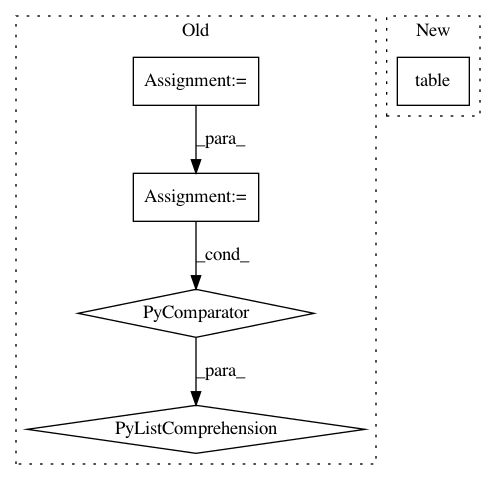

a0c0f4d3200f31be58caac1a803bcc85622221db,datalab/stackdriver/commands/_monitoring.py,,_list_resource_descriptors,#Any#Any#,70
Before Change
Lists the resource descriptors in the project.
project_id = args["project"]
pattern = args["type"] or "*"
data = [
collections.OrderedDict([
("Resource type", resource.type),
("Labels", ", ". join([l.key for l in resource.labels])),
])
for resource in gcm._utils.list_resource_descriptors(project_id)
if fnmatch.fnmatch(resource.type, pattern)
]
return IPython.core.display.HTML(
datalab.utils.commands.HtmlBuilder.render_table(data))
After Change
Lists the resource descriptors in the project.
project_id = args["project"]
pattern = args["type"] or "*"
return gcm.ResourceDescriptors(project_id=project_id).table(pattern=pattern)
In pattern: SUPERPATTERN
Frequency: 3
Non-data size: 5
Instances
Project Name: googledatalab/pydatalab
Commit Name: a0c0f4d3200f31be58caac1a803bcc85622221db
Time: 2016-08-18
Author: supriyagarg@google.com
File Name: datalab/stackdriver/commands/_monitoring.py
Class Name:
Method Name: _list_resource_descriptors
Project Name: has2k1/plotnine
Commit Name: 6297e57902fefaca96e4bc60ad17f65be44cd825
Time: 2013-10-26
Author: greg@yhathq.com
File Name: ggplot/ggplot.py
Class Name: ggplot
Method Name: __repr__
Project Name: googledatalab/pydatalab
Commit Name: a0c0f4d3200f31be58caac1a803bcc85622221db
Time: 2016-08-18
Author: supriyagarg@google.com
File Name: datalab/stackdriver/commands/_monitoring.py
Class Name:
Method Name: _list_metric_descriptors